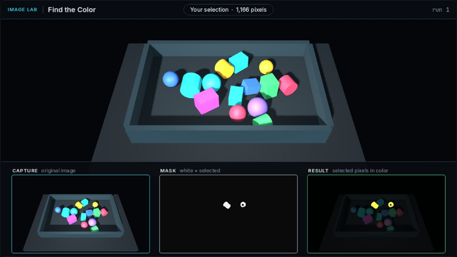
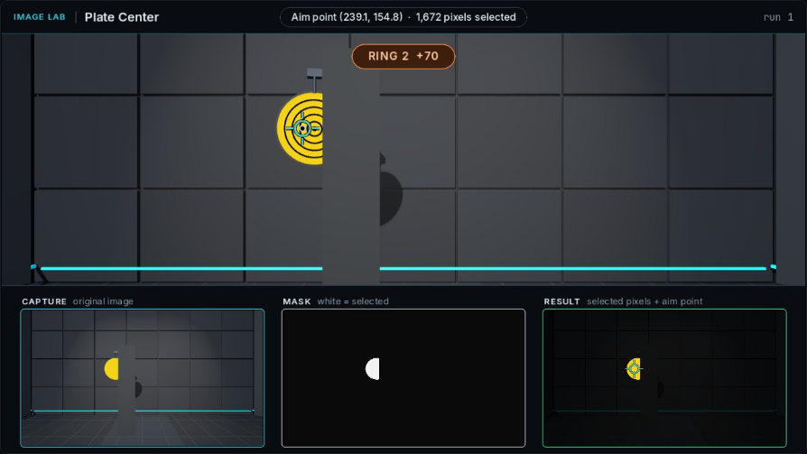

Capture
The camera image is the input. It stays fixed between runs on this pile.
ME41006 · Learning notes · 02
Inspect the relationship between camera pixels, a binary mask, and the location inferred from that mask.
Each lesson asks a different question about what the camera sees.
Select yellow pixels and inspect the binary mask.
Return an aim point that belongs to one plate.
Estimate a plate’s center when part of its outline is occluded.
The three monitors separate the input image from the result returned by your code.

The camera image is the input. It stays fixed between runs on this pile.
White pixels are selected by the program. Black pixels are excluded.
Selected pixels retain their original color, making missing or unwanted regions easier to inspect.
Occlusion changes the visible shape of a plate.

The camera records only the exposed portion of the plate.
The mask represents the visible region returned by the program.
The rings show how close the aim point is to the plate’s center.
Compare the same capture first, then test with a new pile or layout.
SELECTIONWhich target pixels are missing, and which unwanted pixels are included?
LOCALIZATIONDoes the aim point refer to one object and the location the task asks for?
GENERALIZATIONDoes the result remain useful when the pile, layout, or visible shape changes?